4. Aplicaciones de la derivación
4.1. Valores máximos y mínimos
Una función \(f\) tiene un máximo absoluto (o máximo global) en \(c\) si
\[ f(x)\leq f(c) \quad \text{ para todo } \quad x\in D, \]
siendo \(D\) el dominio de \(f\). Al número \(f(c)\) se lo llama valor máximo de \(f\) en \(D\).
Análogamente, \(f\) tiene un mínimo absoluto (o mínimo global) en \(c\) si
\[ f(x)\geq f(c) \quad \text{ para todo } \quad x\in D. \]
En este caso, a \(f(c)\) se lo llama valor mínimo de \(f\) en \(D\).
Los valores máximos y mínimos de \(f\) se conocen como valores extremos de \(f\).
En la siguiente gráfica vemos una función con máximo absoluto en \(d\) y mínimo absoluto en \(a\). Esto significa que el punto \((d,f(d))\) es el más alto de la gráfica y \((a,f(a))\) el más bajo.
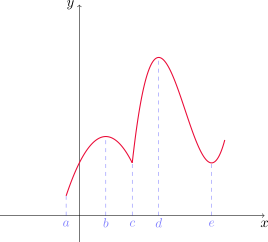
Si solamente restringimos la atención al intervalo \((a,c)\), entonces \(f(b)\) es el valor más grande de \(f\) en esa región. En este caso, decimos que \(f(b)\) es un valor máximo local de \(f\). De manera similar, \(f(c)\) y \(f(e)\) son valores mínimos locales de \(f\).
Una función \(f\) tiene un máximo local (o máximo relativo) en \(c\) si \(f(x)\leq f(c)\) para \(x\) a \(c\) (es decir, si existe \(r>0\) tal que la desigualdad anterior se cumple para todo \(x\in (c-r,c+r)\) que esté en el dominio de \(f\)).
De manera similar, \(f\) tiene un mínimo local en \(c\) si \(f(x)\geq f(c)\) para todo \(x\) cercano a \(c\).
Encontrar extremos locales y absolutos de la función \(f(x)=\cos x\).
Recordemos que \(-1\leq \cos x\leq 1\) para todo \(x\in\mathbb{R}\). Por lo tanto, \(1\) es el valor máximo absoluto de \(f\) (y, en consecuencia, también local) y \(f\) toma este valor una cantidad infinita de veces, en todo \(x=2n\pi\), con \(n\in \mathbb{Z}\).
Por otro lado, \(-1\) es el valor mínimo absoluto (y local) de \(f\), que se alcanza siempre que \(x=(2n+1)\pi\), con \(n\in \mathbb{Z}\).
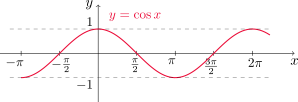
Analizar extremos locales y absolutos de \(f(x)=x^2\).
Observemos primero que \(f(0)=0\leq x^2=f(x)\), es decir, \(f(0)\leq f(x)\) para cualquier \(x\in\mathbb{R}\). Esto nos dice que \(0\) es el valor mínimo absoluto (y local) de la función \(f\), y se alcanza cuando \(x=0\).
Sin embargo, \(f\) no tiene máximo absoluto, ya que
\[ \lim_{x\to \infty} x^2 =\infty \quad \text{ y } \quad \lim_{x\to -\infty} x^2=\infty. \]
Inspeccionando el gráfico de \(f\) podemos ver que tampoco hay máximos locales.
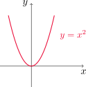
Analizar extremos para la función \(f(x)=x^3\).
Notemos que \(f\) no tiene valor extremos absolutos, puesto que
\[ \lim_{x\to \infty} x^3 =\infty \quad \text{ y } \quad \lim_{x\to -\infty} x^3=-\infty. \]
Observando el gráfico de \(f\) podemos comprobar que tampoco existen extremos locales.
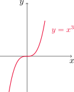
Analizar los extremos de la función
\[ f(x)=3x^4-16x^3+18x^2, \quad\text{ para }\quad -1\leq x\leq 4. \]
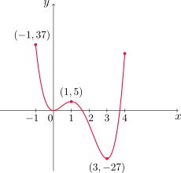
Observando el gráfico podemos ver que \(f(1)=5\) es un valor máximo local y \(f(-1)=37\) es el valor máximo absoluto de \(f\) sobre el intervalo (éste no se considera máximo local por encontrarse en un extremo del intervalo dado).
Por otra parte, \(f(0)=0\) es un mínimo local y \(f(3)=-27\) es el valor mínimo absoluto, y también resulta local.
El siguiente teorema será una herramienta importante para encontrar extremos de funciones continuas sobre intervalos cerrados.
Teorema del valor extremo
Si \(f\) es continua sobre el intervalo cerrado \([a,b]\), entonces \(f\) alcanza un valor máximo absoluto \(f(c)\) y un valor mínimo absoluto \(f(d)\) en algunos números \(c,d\) en \([a,b]\).
Este teorema nos asegura existencia de los puntos \(c\) y \(d\), pero como vemos en la siguiente figura éstos podrían no ser únicos.
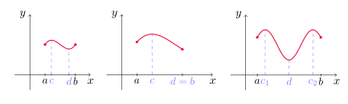
En general, si \(f\) no es continua o el intervalo no es cerrado, el resultado anterior podría no valer. Aquí vemos algunos ejemplos donde esto ocurre.
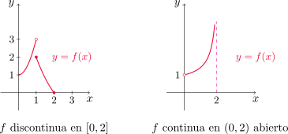
A la izquierda, vemos que \(f\) tiene un valor mínimo \(f(2)=0\), pero no hay valor máximo. A la derecha no hay valor mínimo ni máximo.
El teorema anterior nos da condiciones para asegurar la existencia de extremos de una función en un intervalo, pero no dice cómo encontrarlos. Para responder a esta pregunta, veamos el siguiente resultado.
Teorema de Fermat
Si \(f\) tiene un extremo local en \(c\) y \(f'(c)\) existe, entonces \(f'(c)=0\).
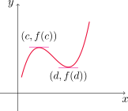
El recíproco del teorema de Fermat es falso, como veremos en el siguiente ejemplo.
Mostrar que \(f(x)=x^3\) satisface \(f'(0)=0\) pero que \(f\) no alcanza extremos locales en \(x=0\).
Dado que \(f'(x)=3x^2\), es inmediato comprobar que \(f'(0)=0\). Por otro lado, si consideramos el intervalo \((0-r,0+r)=(-r,r)\) para cualquier \(r>0\), tenemos que
\[ f(x)<f(0) \quad \text{ para } -r<x<0 \]
y
\[ f(x)>f(0) \quad \text{ para } 0<x<r. \]
En consecuencia, en \(x=0\) no puede haber ni un mínimo ni un máximo local.
Mostrar que \(f(x)=|x|\) presenta un extremo (local y global) en \(x=0\) pero \(f'(0)\) no existe.
Dado que \(f(0)=0\leq |x|=f(x)\) para todo \(x\), \(f\) presenta un mínimo local y global en \(x=0\), de valor 0. Sin embargo, según vimos en el Ejemplo 44 de la Sección 2.8, \(f\) no es derivable en \(x=0\).
El teorema de Fermat establece que si \(f\) presenta algún extremo local, éste debe ocurrir en un punto \(c\) tal que \(f'(c)=0\) o bien que cumpla que \(f'(c)\) no exista. Introduciremos una definición que será de utilidad en adelante.
Si \(c\) es un número en el dominio de \(f\) tal que \(f'(c)=0\) o bien \(f'(c)\) no existe, entonces \(c\) se llama número crítico o número estacionario de \(f\).
Encontrar los números críticos de \(f(x)=x^{3/5}(4-x)\).
La derivada de \(f\) es
\[ f'(x)=\frac{3}{5}x^{3/5-1}(4-x)+x^{3/5}(-1)=\frac{12-3x-5x}{5x^{2/5}}=\frac{12-8x}{5x^{2/5}}. \]
Luego, \(f'(x)=0\) si y sólo si \(12-8x=0\), o bien \(x=3/2\). Por otro lado, \(f'(x)\) no existe si \(x=0\). Por lo tanto, los números críticos de \(f\) son \(x=0\) y \(x=3/2\).
Con la definición de número crítico, el teorema de Fermat puede refrasearse como sigue:
Si \(f\) tiene un máximo o un mínimo local en \(c\), entonces \(c\) es un número crítico de \(f\).
Es decir, todos los extremos locales tienen lugar en números críticos. Sin embargo, no todo número crítico da lugar a un extremo, por lo que será necesario clasificarlos de alguna manera, como veremos luego.
¿Cómo encontrar los extremos de una función continua \(f\) en un intervalo cerrado \([a,b]\)?
Para ello podemos seguir los siguientes pasos:
- Hallar los valores de \(f\) en cada número crítico de \(f\) en \((a,b)\).
- Calcular \(f(a)\) y \(f(b)\).
- Comparar todos estos valores. El más grande de todos es el valor máximo absoluto y el más chico el valor mínimo absoluto.
Calcular los valores máximos y mínimos absolutos de \(f(x)=x^3-3x^2+1\) en el intervalo \([-1/2, 4]\).
Antes de comenzar, notemos que \(f\) es continua en el intervalo cerrado \([-1/2,4]\) por tratarse de un polinomio. El teorema del valor extremo nos asegura entonces que existen el máximo y el mínimo absolutos de \(f\) en el intervalo.
Primero buscamos los números críticos de \(f\). Tenemos que \(f'(x)=3x^2-6x=3x(x-2)\), por lo que \(f'(x)=0\) si y sólo si \(x=0\) o \(x=2\). Estos son los únicos puntos críticos de \(f\) ya que no hay valores de \(x\) para los que \(f'(x)\) no exista.
Siguiendo los pasos de la lista anterior, hallamos
\[ f(0)=0^3-3\cdot 0^2+1=1 \quad \text{ y } \quad f(2)=2^3-3\cdot 2^2+1=-3. \]
Ahora calculamos la imagen por \(f\) de los extremos del intervalo
\[ f\left(-\frac{1}{2}\right)=\left(-\frac{1}{2}\right)^3-3\cdot \left(-\frac{1}{2}\right)^2+1=\frac{1}{8} \quad \text{ y } \quad f(4)=4^3-3\cdot 4^2+1=17. \]
El valor máximo absoluto de \(f\) es 17 y se alcanza en \(x=4\), y el valor mínimo absoluto es \(-3\), cuando \(x=2\).
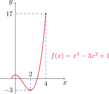
Hallar los valores máximos y mínimos de \(f(x)=x-2\operatorname{sen} x\) en \(I=[0, 2\pi]\).
Primero observemos que \(y=x\) e \(y=2\operatorname{sen} x\) son funciones continuas en \(I\), con lo cual \(f\) es continua en \(I\). El teorema del valor extremo asegura la existencia de extremos absolutos.
Notar que \(f'(x)=1-2\cos x\), con lo cual \(f'(x)=0\) si y sólo si \(\cos x=\frac{1}{2}\). Los puntos de \(I\) que satisfacen esta ecuación son \(x=\pi/3\) y \(x=5\pi/3\).
Evaluamos \(f\) en estos puntos
\[ f\left(\frac{\pi}{3}\right)=\frac{\pi}{3}-2\operatorname{sen}\left(\frac{\pi}{3}\right)=\frac{\pi}{3}-\sqrt{3}\approx -0.68 \quad \text{ y }\quad f\left(\frac{5\pi}{3}\right)=\frac{5\pi}{3}-2\operatorname{sen}\left(\frac{5\pi}{3}\right)=\frac{5\pi}{3}+\sqrt{3}\approx 6.97 \]
y luego en los extremos de \(I\)
\[ f(0)=0-2\operatorname{sen} 0=0 \quad \text{ y } \quad f(2\pi)=2\pi-2\operatorname{sen}(2\pi)=2\pi \approx 6.28, \]
con lo que el valor máximo absoluto de \(f\) en \(I\) es \(5\pi/3+\sqrt{3}\) cuando \(x=5\pi/3\) y el valor mínimo absoluto es \(\pi/3-\sqrt{3}\) cuando \(x=\pi/3\).
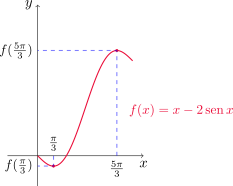
4.3. ¿Cómo afectan las derivadas la forma de una gráfica?
¿Qué dice \(f'\) con respecto a \(f\)?
En la siguiente figura podemos ver que entre los puntos \(A\) y \(B\) las rectas tangentes tienen pendiente positiva, con lo cual \(f'(x)>0\). Esto mismo ocurre entre \(C\) y \(D\). Por otro lado, entre \(B\) y \(C\) las pendientes son negativas, con lo que \(f'(x)<0\).
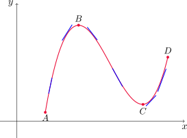
Prueba creciente/decreciente
Si \(f'(x)>0\) sobre un intervalo, entonces \(f\) es creciente en ese intervalo.
Si \(f'(x)<0\) sobre un intervalo, \(f\) es decreciente en ese intervalo.
Encontrar dónde cree la función \(f(x)=3x^4-4x^3-12x^2+5\) y dónde decrece.
Tenemos que \(f'(x)=12x^3-12x^2-24x=12x(x^2-x-2)=12x(x-2)(x+1)\). Con esto, vemos que \(f'\) se anula en \(x=-1\), \(x=0\) y \(x=2\). Para determinar el signo de \(f'\) en cada uno de los intervalos que resultan de dividir la recta en los puntos críticos de \(f\) realizamos la siguiente tabla
| Intervalo | \((x+1)\) | \(12x\) | \((x-2)\) | \(f'(x)\) |
|---|---|---|---|---|
| \((-\infty,-1)\) | \(-\) | \(-\) | \(-\) | \(-\) |
| \((-1,0)\) | \(+\) | \(-\) | \(-\) | \(+\) |
| \((0,2)\) | \(+\) | \(+\) | \(-\) | \(-\) |
| \((2,+\infty)\) | \(+\) | \(+\) | \(+\) | \(+\) |
Observando la última columna de la tabla y utilizando la prueba creciente/decreciente, obtenemos que \(f\) es creciente en \((-1,0)\) y en \((2,+\infty)\), y decrece en \((-\infty,-1)\) y en \((0,2)\).
Notar que en el ejemplo anterior hemos escrito: \(f\) es creciente en \((-1,0)\) y en \((2,+\infty)\), y no escribimos \(f\) es creciente en \((-1,0)\cup (2,+\infty)\). Ésta última expresión es incorrecta, pues de acuerdo con la definición de función creciente, debería ocurrir que \(f(x_1)<f(x_2)\) siempre que \(x_1<x_2\). Al considerar el conjunto \((-1,0)\cup (2,+\infty)\) ésto no se cumpliría pues, por ejemplo, \(x_1=0.5\) y \(x_2=2.5\) están en este conjunto, y \(x_1<x_2\), sin embargo \(f(x_1)=1.6875\) y \(f(x_2)=-15.3125\).
Una observación similar puede hacerse para el caso decreciente.
El siguiente resultado nos permitirá clasificar los números críticos de una función para saber si corresponden a extremos locales.
Prueba de la primera derivada
Sea \(f\) continua, \(c\) un número crítico de \(f\) y supongamos que \(f'(x)\) existe cerca de \(c\) (excepto quizás en \(c\)). Luego:
- si \(f'(x)>0\) para \(x<c\) y \(f'(x)<0\) para \(x>c\), entonces \(f\) tiene un máximo local en \(x=c\).
- si \(f'(x)<0\) para \(x<c\) y \(f'(x)>0\) para \(x>c\), entonces \(f\) tiene un mínimo local en \(x=c\).
- si \(f'\) es positiva (o negativa) a ambos lados de \(c\), entonces \(f\) no tiene máximo ni mínimo local en \(x=c\).
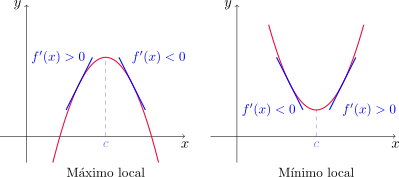
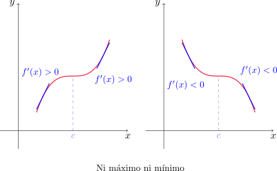
Encontrar los valores máximos y mínimos locales de la función \(f\) del Ejemplo 10.
Ya sabemos que los números críticos de \(f\) son \(-1\), \(0\) y \(2\). En \(x=-1\) el signo de \(f'\) pasa de negativo a positivo, con lo que la prueba de la primera derivada nos dice que \(f\) tiene un mínimo local en \(x=-1\), cuyo valor es \(f(-1)=0\).
De manera similar, \(f'\) pasa de positiva a negativa en \(x=0\), con lo que en este punto \(f\) presenta un máximo local de valor \(f(0)=5\).
Por último, \(f'\) cambia de negativa a positiva en \(x=2\), con lo que aquí \(f\) tiene un mínimo local, cuyo valor es \(f(2)=-27\).
La siguiente propiedad será de utilidad en diversas ocasiones.
Propiedad del signo constante
Supongamos que \(f\) es continua en \((a,b)\) y además \(f(x)\neq 0\) para todo \(x\in (a,b)\). Entonces \(f\) tiene signo constante sobre el intervalo, es decir, o bien se cumple que
\[f(x)>0 \quad \text{ para todo }x\in (a,b)\]
o bien
\[f(x)<0 \quad \text{ para todo }x\in (a,b).\]
Determinar los valores máximo y mínimo de la función \(g(x)=x+2\operatorname{sen} x\) en el intervalo \([0,2\pi]\).
El teorema del valor extremo asegura la existencia de valor máximo y mínimo absoluto, ya que \(g\) es continua en el intervalo cerrado \([0, 2\pi]\).
La derivada de \(g\) es \(g'(x)=1+2\cos x\), y \(g'(x)=0\) si y sólo si \(x=2\pi/3\) o \(x=4\pi/3\).
Ahora bien, \(g'\) es continua en \((0,2\pi/3)\), \((2\pi/3,4\pi/3)\) y en \((4\pi/3,2\pi)\) y además es no nula en cada uno de estos intervalos.
Por la propiedad del signo constante, \(g'\) tiene signo constante en cada uno de estos intervalos. Por lo tanto, para analizar el signo de \(g'\) en cada intervalo basta con evaluar el signo de \(g'\) en cualquier punto de los mismos. La siguiente tabla muestra estos cálculos, en la cual el crecimiento o decrecimiento en cada caso es consecuencia de la prueba creciente/decreciente.
| Intervalo | \(x_0\) | \(g'(x_0)\) | \(g\) |
|---|---|---|---|
| \((0,2\pi/3)\) | 1 | \(+\) | crece |
| \((2\pi/3,4\pi/3)\) | 3 | \(-\) | decrece |
| \((4\pi/3,2\pi)\) | 5 | \(+\) | crece |
Utilizando ahora la prueba de la primera derivada podemos concluir que \(g\) presenta un máximo local en \(x=2\pi/3\), de valor
\[ g\left(\frac{2\pi}{3}\right)=\frac{2\pi}{3}+\sqrt{3}\approx 3.83 \]
y en \(x=4\pi/3\) presenta un mínimo local cuyo valor es
\[ g\left(\frac{4\pi}{3}\right)=\frac{4\pi}{3}-\sqrt{3}\approx 2.46. \]
Ahora analizamos los extremos del intervalo
\[ g(0)=0+2\operatorname{sen} 0=0 \quad \text{ y } \quad g(2\pi)=2\pi+2\operatorname{sen}(2\pi)=2\pi \approx 6.28, \]
con lo que \(g\) alcanza sus valores mínimo y máximo absoluto en los extremos izquierdo y derecho del intervalo, respectivamente.
¿Qué dice \(f''\) con respecto a \(f\)?
En la siguiente figura vemos el gráfico de dos funciones crecientes que unen el punto \(A\) con el punto \(B\), pero se flexionan en direcciones distintas.
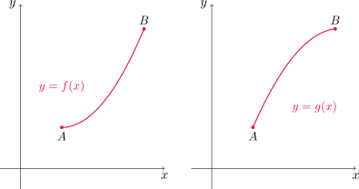
Si dibujamos algunas rectas tangentes en distintos puntos, vemos que la gráfica de la izquierda queda por arriba de estas rectas, y la de la derecha por debajo.
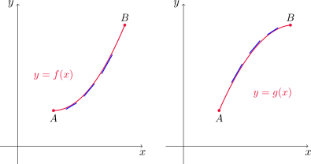
Si la gráfica de \(f\) queda por arriba de todas sus tangentes en un intervalo \(I\), entonces \(f\) se dice cóncava hacia arriba o convexa en \(I\).
Si en cambio la gráfica de \(f\) queda por debajo de sus tangentes en \(I\), \(f\) se dice cóncava hacia abajo o cóncava en \(I\).
En la primera gráfica vemos que la pendiente se incrementa de izquierda a derecha. Esto quiere decir que \(f'\) es creciente y, por lo tanto, su derivada \(f''\) es positiva. De manera similar, en la segunda gráfica la pendiente disminuye de izquierda a derecha, con lo que \(f'\) es decreciente y su derivada \(f''\) resulta negativa. Esta idea nos ayuda a establecer el siguiente criterio de concavidad.
Prueba de la concavidad
Si \(f''(x)>0\) para todo \(x\) en \(I=(a,b)\), entonces la gráfica de \(f\) es cóncava hacia arriba en \(I\).
Si \(f''(x)<0\) para todo \(x\in I\), entonces la gráfica de \(f\) es cóncava hacia abajo sobre \(I\).
Un punto \(P\) en la curva \(y=f(x)\) recibe el nombre de punto de inflexión si \(f\) es continua allí y además la curva cambia de cóncava hacia abajo a cóncava hacia arriba, o bien de cóncava hacia arriba a cóncava hacia abajo en \(P\).
En virtud de la prueba de concavidad, habrá puntos de inflexión donde la derivada segunda cambie de signo.
Trazar una posible gráfica de una función \(f\) que cumpla las siguientes condiciones:
\(f'(x)>0\) en \((-\infty,1)\), \(f'(x)<0\) en \((1,\infty)\),
\(f''(x)>0\) en \((-\infty,-2) \cup (2,\infty)\), \(f''(x)<0\) en \((-2,2)\),
\(\displaystyle \lim_{x\to -\infty} f(x)=-2\), \(\displaystyle \lim_{x\to \infty} f(x)=0\).
En virtud de la prueba creciente/decreciente, la primera condición establece que \(f\) es creciente en \((-\infty,1)\) y decreciente en \((1,\infty)\).
De la segunda condición, aplicando la prueba de la concavidad concluimos que la gráfica de \(f\) debe ser cóncava hacia arriba en \((-\infty,-2)\cup (2,\infty)\) y cóncava hacia abajo en \((-2,2)\).
Por último, la tercera condición establece que \(y=-2\) e \(y=0\) son las ecuaciones de las asíntotas horizontales de \(f\).
Con esta información trazamos un posible gráfico aproximado.
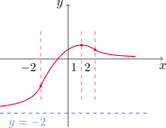
Como otra aplicación de la derivada segunda, podemos dar una forma alternativa de determinar la naturaleza de un punto crítico.
Prueba de la segunda derivada
Supongamos que \(f''\) es continua cerca de \(c\).
Si \(f'(c)=0\) y \(f''(c)>0\), entonces \(f\) tiene un mínimo relativo en \(x=c\).
Si \(f'(c)=0\) y \(f''(c)<0\), entonces \(f\) tiene un máximo relativo en \(x=c\).
Analizar la curva \(y=x^4-4x^3\) con respecto a la concavidad, puntos de inflexión y extremos locales. Dibujar la curva.
Primero calculamos la derivada primera \(y'(x)=4x^3-12x^2=4x^2(x-3)\). Entonces \(y'(x)=0\) si y sólo si \(x=0\) o \(x=3\). Éstos son los números críticos de la función.
Ahora calculamos la derivada segunda \(y''(x)=12x^2-24x=12x(x-2)\). Observemos ahora que
\[ f''(3)=36>0, \]
con lo que \(y\) presenta un mínimo local en \(x=3\) cuyo valor es \(y(3)=-27\), en virtud de la prueba de la segunda derivada. Sin embargo,
\[ y''(0)=0 \]
con lo cual no podemos utilizar este mismo argumento para conocer la naturaleza del punto \(x=0\). Como \(y'\) no cambia de signo en \(x=0\), en este punto no tenemos extremo.
Para determinar la concavidad y puntos de inflexión hacemos la siguiente tabla (recordar la propiedad del signo constante, que aplicamos a \(y''\)) y luego la prueba de concavidad.
| Intervalo | \(x_0\) | \(y''(x_0)\) | \(y\) |
|---|---|---|---|
| \((-\infty,0)\) | -1 | \(+\) | convexa |
| \((0,2)\) | 1 | \(-\) | cóncava |
| \((2,+\infty)\) | 3 | \(+\) | convexa |
Luego la curva \(y=x^4-4x^3\) es convexa en los intervalos \((-\infty,0)\) y \((2,+\infty)\), y cóncava en \((0,2)\).
Como \(y\) cambia de convexidad en \(x=0\) y en \(x=2\), y además resulta continua allí, los puntos \(P_1=(0,y(0))=(0,0)\) y \(P_2=(2,y(2))=(2,-16)\) son puntos de inflexión de \(y\).
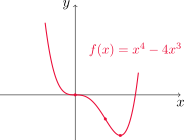
Trazar la gráfica de \(f(x)=x^{2/3}(6-x)^{1/3}\), sabiendo que
\[ f'(x)=\frac{4-x}{x^{1/3}(6-x)^{2/3}} \quad\text{ y }\quad f''(x)=-\frac{8}{x^{4/3}(6-x)^{5/3}}. \]
Podemos ver que \(f'(x)=0\) si y sólo si \(x=4\). Además, \(f'\) no existe cuando \(x=0\) o cuando \(x=6\). Entonces \(0\), \(4\) y \(6\) son los tres números críticos de \(f\). Utilizando la propiedad del signo constante y luego la
prueba de la primera derivada armamos la siguiente tabla.
| Intervalo | \(x_0\) | \(f'(x_0)\) | \(f\) |
|---|---|---|---|
| \((-\infty,0)\) | -1 | \(-\) | decrece |
| \((0,4)\) | 1 | \(+\) | crece |
| \((4,6)\) | 5 | \(-\) | decrece |
| \((6,+\infty)\) | 7 | \(-\) | decrece |
Por otro lado, observando \(f''\) vemos que nunca se anula, y no existe cuando \(x=0\) o \(x=6\). La siguiente tabla nos da el signo de \(f''\) y la convexidad, utilizando la prueba de la concavidad.
| Intervalo | \(x_0\) | \(f''(x_0)\) | \(f\) |
|---|---|---|---|
| \((-\infty,0)\) | -1 | \(-\) | cóncava |
| \((0,6)\) | 1 | \(-\) | cóncava |
| \((6,+\infty)\) | 7 | \(+\) | convexa |
La curva cambia de convexidad en \(x=6\) y resulta continua allí, con lo cual \(P=(6,f(6))=(6,0)\) es el único punto de inflexión de la curva. El gráfico se muestra a continuación.
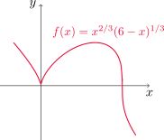
4.4. Formas indeterminadas y la regla de L’Hospital
Si tenemos un límite de la forma \[ \lim_{x\to a} \frac{f(x)}{g(x)}, \]
donde \(f(x)\to 0\) y \(g(x)\to 0\) cuando \(x\to a\), éste puede existir o no, y se conoce como forma indeterminada de tipo \(\displaystyle \frac{0}{0}\).
Si en cambio \(f(x)\to \pm\infty\) y \(g(x)\to \pm\infty\) el límite del cociente puede existir o no, y se conoce como forma indeterminada de tipo \(\displaystyle \frac{\infty}{\infty}\).
En esta sección veremos una forma de calcular estos límites utilizando derivadas.
Regla de L’Hospital
Sean \(f\) y \(g\) dos funciones derivables, de manera que \(g'(x)\neq 0\) en un intervalo abierto \(I\) que contiene a \(a\) (excepto quizás en \(a\)). Supongamos además que
\[ \lim_{x\to a}f(x)=0\quad \text{ y }\quad \lim_{x\to a}g(x)=0, \]
o bien que
\[ \lim_{x\to a}f(x)=\pm \infty\quad \text{ y }\quad \lim_{x\to a}g(x)=\pm\infty. \]
En otras palabras, tenemos una forma indeterminada del tipo \(0/0\) o \(\infty/\infty\). Entonces
\[ \lim_{x\to a}\frac{f(x)}{g(x)}=\lim_{x\to a}\frac{f'(x)}{g'(x)}, \]
si este último límite existe (o si es \(\infty\) o \(-\infty\)).
Esta regla también es válida para límites laterales y límites en el infinito. Es decir, sigue siendo válida si reemplazamos \(x\to a\) por \(x\to a^+\), \(x\to a^-\), \(x\to\infty\) o \(x\to -\infty\).
Encontrar \(\displaystyle \lim_{x\to 1} \frac{\ln x}{x-1}\).
Si escribimos \(f(x)=\ln x\) y \(g(x)=x-1\), entonces tenemos que
\[ \lim_{x\to 1} f(x)=0 \quad \text{ y } \quad \lim_{x\to 1} g(x)=1. \]
Además, \(g'(x)=1\neq 0\) para todo \(x\). Estudiamos el límite
\[ \lim_{x\to 1} \frac{f'(x)}{g'(x)}=\lim_{x\to 1} \frac{\frac{1}{x}}{1}=\lim_{x\to 1} \frac{1}{x}=1. \]
Como el límite de \(f'/g'\) existe, la regla de L’Hospital establece que
\[ \lim_{x\to 1} \frac{f(x)}{g(x)}=\lim_{x\to 1} \frac{f'(x)}{g'(x)}=1. \]
Calcular \(\displaystyle \lim_{x\to \infty} \frac{e^x}{x^2}\).
Escribiendo \(f(x)=e^x\) y \(g(x)=x^2\), es inmediato que
\[ \lim_{x\to \infty} f(x)=\infty \quad \text{ y } \quad \lim_{x\to \infty} g(x)=\infty, \]
por lo que se trata de una indeterminación del tipo \(\infty/\infty\). Calculamos
\[ \lim_{x\to \infty} \frac{f'(x)}{g'(x)}=\lim_{x\to \infty} \frac{e^x}{2x}, \]
que vuelve a resultar una indeterminación del tipo \(\infty/\infty\). Repitiendo el proceso una vez más
\[ \lim_{x\to \infty} \frac{f''(x)}{g''(x)}=\lim_{x\to \infty} \frac{e^x}{2}=\infty. \]
Utilizando la regla de L’Hospital concluimos que
\[ \lim_{x\to \infty} \frac{f(x)}{g(x)}=\lim_{x\to \infty} \frac{f'(x)}{g'(x)}=\lim_{x\to \infty} \frac{f''(x)}{g''(x)}=\infty. \]
Calcular \(\displaystyle \lim_{x\to \infty} \frac{\ln x}{\sqrt[3]{x}}\).
Sean \(f(x)=\ln x\) y \(g(x)=\sqrt[3]{x}\). Dado que
\[ \lim_{x\to \infty} f(x)=\infty \quad \text{ y } \quad \lim_{x\to \infty} g(x)=\infty, \]
tenemos una indeterminación de tipo \(\infty/\infty\). Calculamos
\[ \lim_{x\to \infty} \frac{f'(x)}{g'(x)}=\lim_{x\to \infty} \frac{\frac{1}{x}}{\frac{1}{3x^{2/3}}}=\lim_{x\to \infty} \frac{3x^{2/3}}{x}=\lim_{x\to \infty} \frac{3}{x^{1/3}}=0. \]
Como el límite de \(f'/g'\) existe, por la regla de L’Hospital concluimos que
\[ \lim_{x\to \infty} \frac{f(x)}{g(x)}=\lim_{x\to \infty} \frac{f'(x)}{g'(x)}=0. \]
Encontrar \(\displaystyle \lim_{x\to 0} \frac{\tan x-x}{x^3}\).
Escribimos \(f(x)=\tan x-x\) y \(g(x)=x^3\). Es fácil comprobar que
\[ \lim_{x\to 0} f(x)=0 \quad \text{ y que } \quad \lim_{x\to 0} g(x)=0, \]
con lo cual tenemos una indeterminación del tipo \(0/0\). Además, \(g'(x)=3x^2\) con lo que \(g'(x)\neq 0\) para todo \(x\neq 0\). Calculamos el límite del cociente de derivadas
\[ \lim_{x\to 0} \frac{f'(x)}{g'(x)}=\lim_{x\to 0} \frac{\sec^2 x-1}{3x^2}, \]
que resulta nuevamente indeterminado del tipo \(0/0\). Si calculamos el límite del cociente de las derivadas segundas
\[ \lim_{x\to 0} \frac{f''(x)}{g''(x)}=\lim_{x\to 0} \frac{2\sec x\,\tan x}{6x}=\lim_{x\to 0} \frac{1}{3}\frac{\operatorname{sen} x}{x}\frac{1}{\cos^2 x}=\frac{1}{3}, \] en virtud de la fórmula obtenida en la Sección 3.3.
Finalmente, por la regla de L’Hospital tenemos
\[ \lim_{x\to 0} \frac{f(x)}{g(x)}=\lim_{x\to 0} \frac{f'(x)}{g'(x)}=\lim_{x\to 0} \frac{f''(x)}{g''(x)}=\frac{1}{3}. \]
Hallar \(\displaystyle \lim_{x\to \pi^-} \frac{\operatorname{sen} x}{1-\cos x}\).
Notar que la función dada es continua en \(x=\pi\), por lo que una sustitución directa nos da
\[ \lim_{x\to \pi^-} \frac{\operatorname{sen} x}{1-\cos x}=\frac{\operatorname{sen} \pi}{1-\cos \pi}=\frac{0}{2}=0. \]
Si intentamos aplicar la regla de L’Hospital sin advertir que no se trata de una indeterminación del tipo 0/0, obtendríamos
\[ \lim_{x\to \pi^-} \frac{\operatorname{sen} x}{1-\cos x}=\lim_{x\to \pi^-}\frac{\cos x}{\operatorname{sen} x}=+\infty, \]
lo que nos da una respuesta equivocada.
Productos indeterminados
Si tenemos \(\displaystyle \lim_{x\to a}f(x)=0\) y \(\lim_{x\to a}g(x)=\pm \infty\), entonces el límite
\[ \lim_{x\to a}f(x)g(x) \]
se llama forma indeterminada de tipo \(0\cdot \infty\). Para resolverlo, se convierte el producto en un cociente de la siguiente manera
\[f\cdot g =\frac{f}{1/g}\quad \text{ o bien} \quad f\cdot g=\frac{g}{1/f},\]
y de esta forma se lo lleva a una indeterminación del tipo \(0/0\) o \(\infty/\infty\).
Evaluar \(\lim_{x\to 0^+}x\ln x\).
Si \(f(x)=x\) y \(g(x)=\ln x\), entonces es claro que
\[ \lim_{x\to 0^+} f(x)=0 \quad \text{ y } \quad \lim_{x\to 0^+} g(x)=-\infty, \]
por lo que se trata de un producto indeterminado. Si reescribimos el producto como un cociente obtenemos
\[ \lim_{x\to 0^+} \frac{\ln x}{\frac{1}{x}}, \]
que es una indeterminación de tipo \(\infty/\infty\). Planteamos entonces
\[ \lim_{x\to 0^+} \frac{\frac{d}{dx}(\ln x)}{\frac{d}{dx}\left(\frac{1}{x}\right)}=\lim_{x\to 0^+} \frac{\frac{1}{x}}{-\frac{1}{x^2}}=\lim_{x\to 0^+} -\frac{x^2}{x}=0. \]
Como éste último límite existe, podemos concluir por la regla de L’Hospital que
\[ \lim_{x\to 0^+}x\ln x = 0. \]
Diferencias indeterminadas
Si \(\displaystyle \lim_{x\to a}f(x)=\infty\) y \(\lim_{x\to a}g(x)= \infty\), entonces el límite
\[ \lim_{x\to a}\left(f(x)-g(x)\right) \]
se llama forma indeterminada de tipo \(\infty - \infty\).
En este caso se intenta convertir la diferencia en un cociente (por ejemplo, buscando un denominador común o haciendo una racionalización) para obtener una indeterminación del tipo \(0/0\) o \(\infty/\infty\).
Calcular \(\lim_{x\to (\pi/2)^-}\left(\sec x-\tan x\right)\).
Tanto el minuendo como el sustraendo tienen límite \(\infty\), con lo cual reescribimos la expresión como
\[ \sec x-\tan x=\frac{1}{\cos x}-\frac{\operatorname{sen} x}{\cos x}=\frac{1-\operatorname{sen} x}{\cos x}. \]
Llamando \(f(x)=1-\operatorname{sen} x\) y \(g(x)=\cos x\) tenemos que
\[ \lim_{x\to (\pi/2)^-} f(x)=0 \quad \text{ y } \quad \lim_{x\to (\pi/2)^-}g(x)= 0, \]
por lo que resulta una indeterminación del tipo \(0/0\). Notemos que \(g'(x)=-\operatorname{sen} x\), y es no nula cerca de \(\pi/2\). Calculamos entonces
\[ \lim_{x\to (\pi/2)^-}\frac{f'(x)}{g'(x)}=\lim_{x\to (\pi/2)^-}\frac{-\cos x}{-\operatorname{sen} x}=0, \]
y por la regla de L’Hospital concluimos que
\[ \lim_{x\to (\pi/2)^-}\frac{f(x)}{g(x)}=\lim_{x\to (\pi/2)^-}\frac{f'(x)}{g'(x)}=0. \]
Potencias indeterminadas
Consideremos el límite \(\displaystyle \lim_{x\to a} f(x)^{g(x)}\).
- Cuando
\[ \lim_{x\to a}f(x)=0\quad\text{ y }\quad \lim_{x\to a}g(x)=0 \]
se llama forma indeterminada de tipo \(0^0\).
- Si ocurre que
\[ \lim_{x\to a}f(x)=\infty\quad\text{ y }\quad \lim_{x\to a}g(x)=0, \]
se dice forma indeterminada de tipo \(\infty^0\).
- Si
\[ \lim_{x\to a}f(x)=1\quad\text{ y }\quad \lim_{x\to a}g(x)=\pm \infty \]
el límite se conoce como forma indeterminada de tipo \(1^\infty\).
Para resolver este tipo de indeterminaciones, podemos utilizar el logaritmo natural. Si \[ y=f(x)^{g(x)} \]
entonces
\[ \ln y=g(x)\ln(f(x)). \]
O bien, si usamos la exponencial
\[ f(x)^{g(x)}=e^{g(x)\ln(f(x))}. \]
En ambos casos se obtiene el producto indeterminado \(g(x)\ln(f(x))\), que es de la forma \(0\cdot \infty\).
Calcular \(\lim_{x\to 0^+}(1+\operatorname{sen}(4x))^{\cot x}\).
Observemos que la función en la base tiene límite \(1\) y la del exponente \(\infty\), por lo que tenemos una indeterminación del tipo \(1^\infty\).
Si llamamos \(F(x)=(1+\operatorname{sen}(4x))^{\cot x}\), aplicando logaritmo natural resulta
\[ \ln F(x) =\ln\left((1+\operatorname{sen}(4x))^{\cot x}\right)=\cot x \ln((1+\operatorname{sen}(4x)))=\frac{\ln((1+\operatorname{sen}(4x)))}{\tan x}=\frac{f(x)}{g(x)}. \]
Dado que ahora tanto \(f\) como \(g\) tienen límite \(0\) para \(x\to 0^+\), y como \((\tan x)'=\sec^2 x\) es no nula cerca de \(0\), calculamos
\[ \lim_{x\to 0^+}\frac{f'(x)}{g'(x)}=\lim_{x\to 0^+}\frac{\frac{4\cos(4x)}{1+\operatorname{sen}(4x)}}{\sec^2x}=\lim_{x\to 0^+} \frac{4\cos(4x)\cos^2 x}{1+\operatorname{sen}(4x)}=4. \]
Utilizando la regla de L’Hospital, concluimos que
\[ \lim_{x\to 0^+}\ln F(x)=\lim_{x\to 0^+}\frac{f(x)}{g(x)}=\lim_{x\to 0^+}\frac{f'(x)}{g'(x)}=4. \]
Finalmente
\[ \lim_{x\to 0^+} F(x)=\lim_{x\to 0^+} e^{\ln F(x)}=e^{\lim_{x\to 0^+} \ln F(x)}=e^4, \]
dado que \(y=e^x\) es una función continua.
Encontrar \(\lim_{x\to 0^+}x^x\).
En este caso tenemos una forma indeterminada del tipo \(0^0\). Si \(F(x)=x^x\), aplicamos logaritmo natural como antes
\[ \ln F(x)=\ln x^x=x\ln x. \]
En consecuencia,
\[ \lim_{x\to 0^+} \ln F(x)=\lim_{x\to 0^+} x\ln x=0, \]
según vimos en el Ejemplo 21. Por lo tanto
\[ \lim_{x\to 0^+} F(x)=\lim_{x\to 0^+} e^{\ln F(x)}=e^{\lim_{x\to 0^+} \ln F(x)}=1, \]
ya que \(y=e^x\) es una función continua.
4.5. Resumen de trazo de curvas
En esta sección reuniremos todo lo aprendido hasta el momento para realizar el estudio completo de una función dada. Para ello seguiremos una serie de pasos que nos ayudarán a visualizar el gráfico de la función, además de obtener los elementos más distintivos de la misma.
Pasos a seguir en el estudio de una función
(A) Dominio Recordemos que el dominio \(D_f\) de \(f\) consiste en todos los valores de \(x\) para los cuales \(f\) está definida.
(B) Intersecciones La gráfica de \(y=f(x)\) corta al eje \(y\) en \(f(0)\). Por otra parte, los valores de \(x\) donde el gráfico corta al eje de abscisas se encuentran resolviendo la ecuación \(f(x)=0\). (Este paso puede omitirse si la ecuación es difícil de resolver).
(C) Simetría y periodicidad En este paso podemos investigar si la función resulta par o impar.
Recordemos que \(f\) es par si se cumple que
\[ f(-x)=f(x) \quad \text{ para todo }\quad x\in D_f. \]
Por otro lado, \(f\) es impar si se cumple que
\[ f(-x)=-f(x) \quad \text{ para todo }\quad x\in D_f. \]
Por otro lado, para estudiar la periodicidad debemos analizar si existe un número \(p>0\) tal que
\[ f(x+p)=f(x) \quad \text{ para todo }\quad x\in D_f. \]
Si esto pasa, entonces \(f\) es periódica. El número \(p\) más pequeño que satisface esta igualdad se llama período de \(f\).
(D) Asíntotas La recta \(x=a\) es una asíntota vertical de \(f\) si se cumple al menos una de las siguientes condiciones
- \(\displaystyle \lim_{x\to a^+}f(x)=\infty\),
- \(\displaystyle \lim_{x\to a^+}f(x)=-\infty\),
- \(\displaystyle \lim_{x\to a^-}f(x)=\infty\),
- \(\displaystyle \lim_{x\to a^-}f(x)=-\infty\).
La recta \(y=L\) es una asíntota horizontal de la curva \(y=f(x)\) si se cumple que
\[ \lim_{x\to \infty}f(x)=L\quad\text{ o bien }\quad \lim_{x\to -\infty}f(x)=L. \]
(E) Intervalos de crecimiento y decrecimiento Calculamos \(f'(x)\) y determinamos en qué intervalos es positiva y en cuáles negativa. La prueba creciente/decreciente nos dará los intervalos donde \(f\) crece y donde decrece.
(F) Valores extremos locales Calculamos los números críticos de \(f\), es decir, aquellos valores \(c\) para los que \(f'(c)=0\) o \(f'(c)\) no existe. Para clasificarlos podemos utilizar la prueba de la primera derivada o la de la segunda derivada.
(G) Concavidad y puntos de inflexión Calculamos \(f''(x)\) y aplicamos la prueba de concavidad. La función resultará cóncava hacia arriba donde \(f''(x)>0\) y cóncava hacia abajo donde \(f''(x)<0\). Los puntos de inflexión serán aquellos donde \(f\) sea continua y cambie la concavidad de la curva.
(H) Trazar la gráfica Con toda la información obtenida hasta ahora podemos hacer un esbozo aproximado de la curva, indicando los elementos más distintivos.
Graficar la función \(\displaystyle f(x)=\frac{2x^2}{x^2-1}\).
Seguiremos los pasos indicados en el cuadro anterior.
(A) Dominio Al ser una función racional, sabemos que el dominio consiste en todos los valores de \(x\) tales que el denominador es no nulo. Como \(x^2-1=0\) si y sólo si \(x=\pm 1\), tenemos que \(D_f =\mathbb{R}\setminus \{-1,1\}\).
(B) Intersecciones
- Para saber dónde la gráfica corta al eje \(x\) planteamos
\[ f(x)=0, \quad \text{ es decir,} \quad \frac{2x^2}{x^2-1}=0, \]
de donde resulta \(x=0\).
- Para conocer la intersección con el eje \(y\) evaluamos
\[ f(0)=\frac{2\cdot 0^2}{0^2-1}=0. \]
Entonces la gráfica interseca al eje \(y\) en \(y=0\).
En conclusión, la única intersección de la curva con los ejes se da en el origen de coordenadas.
(C) Simetría y periodicidad
Para estudiar la simetría calculamos \(f(-x)\)
\[ f(-x)=\frac{2(-x)^2}{(-x)^2-1}=\frac{2x^2}{x^2-1}=f(x). \]
Como \(f(-x)=f(x)\) para todo \(x\) en el dominio, \(f\) es una función par.
Además \(f\) no resulta periódica.
(D) Asíntotas
- Comencemos buscando las asíntotas verticales. Como \(f\) es racional, es continua en su dominio, por lo tanto los valores de \(x\) candidatos a dar asíntotas verticales son \(x=-1\) y \(x=1\). Vamos a comprobarlo
\[ \lim_{x\to -1^+} f(x)=\lim_{x\to -1^+} \frac{2x^2}{(x-1)(x+1)}=-\infty, \]
dado que el denominador tiende a cero con valores negativos y el numerador se aproxima a \(2>0\). Haciendo un análisis similar, también podemos ver que
\[ \lim_{x\to -1^-} f(x)=\infty, \quad \lim_{x\to 1^-} f(x)=-\infty \quad \text{ y } \quad \lim_{x\to 1^+} f(x)=\infty. \]
Con esto, comprobamos que \(x=-1\) y \(x=1\) son ambas asíntotas verticales de \(f\).
- Para las asíntotas horizontales, calculamos
\[ \lim_{x\to\infty} f(x)=\lim_{x\to \infty} \frac{2x^2}{x^2-1}=\lim_{x\to \infty} \frac{2x^2}{x^2\left(1-\frac{1}{x^2}\right)}=\lim_{x\to \infty} \frac{2}{1-\frac{1}{x^2}}=2, \]
y también
\[ \lim_{x\to-\infty} f(x)=\lim_{x\to -\infty} \frac{2x^2}{x^2-1}==\lim_{x\to -\infty} \frac{2}{1-\frac{1}{x^2}}=2. \]
Esto nos dice que \(y=2\) es asíntota horizontal del gráfico de \(f\).
(E) Intervalos de crecimiento y decrecimiento
Calculamos \(f'\) con la regla del cociente
\[ f'(x)=\frac{4x(x^2-1)-2x^2(2x)}{(x^2-1)^2}=-\frac{4x}{(x^2-1)^2}. \]
Observemos que \(f'(x)=0\) si y sólo si \(x=0\). También vemos que \(f'\) no existe en \(x=\pm 1\), sin embargo éstos puntos no son críticos pues no están en el dominio de \(f\). Por lo tanto \(f\) tiene un único punto crítico, \(x=0\). Recordando la propiedad del signo constante, \(f'\) tendrá signo constante en los intervalos \((-\infty, -1)\), \((-1,0)\), \((0,1)\) y \((1,+\infty)\). En la siguiente tabla determinamos el signo de \(f'\) en cada uno de ellos.
| Intervalo | \(x_0\) | \(f'(x_0)\) | \(f\) |
|---|---|---|---|
| \((-\infty,-1)\) | \(-2\) | \(+\) | crece |
| \((-1,0)\) | -0.5 | \(+\) | crece |
| \((0,1)\) | 0.5 | \(-\) | decrece |
| \((1,+\infty)\) | 2 | \(-\) | decrece |
Mediante la prueba creciente/decreciente podemos concluir que \(f\) crece en \((-\infty,-1)\) y en \((-1,0)\) y decrece en \((0,1)\) y en \((0,+\infty)\).
(F) Valores extremos locales
Observando la tabla anterior, \(f'\) cambia de positiva a negativa en \(x=0\), por lo que \(f\) presenta un máximo local en este punto (en virtud de la prueba de la primera derivada) de valor \(f(0)=0\).
(G) Concavidad y puntos de inflexión
Calculamos la derivada segunda de \(f\), nuevamente utilizando la regla del cociente
\[ f''(x)=-\frac{4(x^2-1)^2-4x\cdot 2(x^2-1)2x}{(x^2-1)^4}=-\frac{4(x^2-1)-16x^2}{(x^2-1)^3}=\frac{12x^2+4}{(x^2-1)^3}. \]
Observemos que \(f''\) nunca se anula, y es continua en \((-\infty,-1)\), \((-1,1)\) y en \((1,+\infty)\). Entonces la propiedad del signo constante nos dice que tendrá signo constante en cada uno de estos intervalos, los cuales calculamos en la siguiente tabla.
| Intervalo | \(x_0\) | \(f''(x_0)\) | \(f\) |
|---|---|---|---|
| \((-\infty,-1)\) | \(-2\) | \(+\) | convexa |
| \((-1,1)\) | 0 | \(-\) | cóncava |
| \((1,+\infty)\) | 2 | \(+\) | convexa |
Entonces \(f\) resulta convexa en los intervalos \((-\infty,-1)\) y en \((1,+\infty)\), y cóncava en \((-1,1)\), en virtud de la prueba de la concavidad. El signo de \(f''\) cambia en \(x=-1\) y en \(x=1\), pero estos puntos no están en el dominio de \(f\), por lo que la gráfica no presenta puntos de inflexión.
(H) Trazar la gráfica Con todo lo calculado trazamos la gráfica aproximada de \(f\).
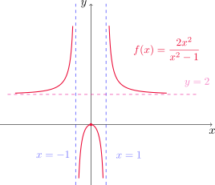
Trazar la gráfica de \(\displaystyle f(x)=\frac{x^2}{\sqrt{x+1}}\).
Procedemos siguiendo los mismos pasos que antes.
(A) Dominio Por un lado, \(\sqrt{x+1}\) está bien definido siempre que \(x+1\geq 0\). Sin embargo, al aparecer en el denominador el valor cero no está permitido. Luego \(x+1>0\), o bien \(x>-1\) con lo que \(D_f =(-1,+\infty)\).
(B) Intersecciones
- Para encontrar intersecciones con el eje \(x\) planteamos
\[ f(x)=0, \quad \text{ es decir,} \quad \frac{x^2}{\sqrt{x+1}}=0, \]
de donde resulta \(x=0\).
- Para conocer la intersección con el eje \(y\) evaluamos
\[ f(0)=\frac{0^2}{\sqrt{0+1}}=0. \]
Entonces la gráfica corta al eje \(y\) en \(y=0\).
Al igual que en el ejemplo anterior, la única intersección de la curva con los ejes ocurre en el origen.
(C) Simetría y periodicidad
Notemos que
\[ f(-x)=\frac{(-x)^2}{\sqrt{-x+1}}=\frac{x^2}{\sqrt{1-x}}, \]
que no coincide con \(f(x)\) ni con \(-f(x)\), por lo que \(f\) no es par ni impar. También observamos que \(f\) no es periódica.
(D) Asíntotas
- Calculemos las asíntotas verticales. Como \(f\) es continua en todo su dominio por ser cociente de funciones continuas, el único punto candidato a originar una asíntota vertical es \(x=-1\). Como \(f\) sólamente está definida a la derecha de \(-1\), calculamos
\[ \lim_{x\to -1^+} f(x)=\lim_{x\to -1^+} \frac{x^2}{\sqrt{x+1}}=\infty, \]
pues el denominador tiende a cero con valores positivos y el numerador se aproxima a \(1>0\). En conclusión, \(x=-1\) es la única asíntota vertical del gráfico de \(f\).
- Recordando nuevamente que \(f\) existe sólo para \(x>-1\), calculamos el límite
\[ \lim_{x\to\infty} f(x)=\lim_{x\to \infty} \frac{x^2}{\sqrt{x+1}}=\lim_{x\to \infty} \frac{x^2}{\sqrt{x}\sqrt{1+\frac{1}{x}}}=\lim_{x\to \infty} \frac{x^{3/2}}{\sqrt{1+\frac{1}{x}}}=\infty. \]
En consecuencia, \(f\) no presenta asíntotas horizontales.
(E) Intervalos de crecimiento y decrecimiento
Calculamos \(f'\) con la regla del cociente
\[ f'(x)=\frac{2x\sqrt{x+1}-x^2\frac{1}{2\sqrt{x+1}}}{\left(\sqrt{x+1}\right)^2}=\frac{x(3x+4)}{2(x+1)^{3/2}}. \]
Notemos que \(f'(x)=0\) cuando \(x=0\) y \(x-=4/3\). Como éste último valor no está en el dominio de \(f\), el único punto crítico de \(f\) es \(x=0\). Aplicando la propiedad del signo constante, \(f'\) tendrá signo constante en los intervalos \((-1, 0)\) y \((0,+\infty)\). En la siguiente tabla determinamos el signo de \(f'\) en cada uno de ellos.
| Intervalo | \(x_0\) | \(f'(x_0)\) | \(f\) |
|---|---|---|---|
| \((-1,0)\) | \(-0.5\) | \(-\) | decrece |
| \((0,+\infty)\) | 1 | \(+\) | crece |
Mediante la prueba creciente/decreciente podemos concluir que \(f\) crece en \((0,+\infty)\) y decrece en \((-1,0)\).
(F) Valores extremos locales
En la tabla anterior podemos ver que \(f'\) cambia de negativa a positiva en \(x=0\), por lo que \(f\) presenta un mínimo local en este punto de valor \(f(0)=0\), en virtud de la prueba de la primera derivada.
(G) Concavidad y puntos de inflexión
Calculamos la derivada segunda de \(f\), nuevamente utilizando la regla del cociente
\[ \begin{aligned} f''(x)=-\frac{(6x+4)2(x+1)^{3/2}-(3x^2+4x)2\frac{3}{2}(x+1)^{1/2}}{4(x+1)^3}&=\frac{(12x+8)(x+1)-3(3x^2+4x)}{4(x+1)^{5/2}}\\ \\ &=\frac{3x^2+8x+8}{4(x+1)^{5/2}}. \end{aligned} \]
Dado que \(f''>0\) en \((-1,+\infty)\), \(f\) resulta convexa en todo su dominio por la prueba de la concavidad. De esta manera, el gráfico de \(f\) no presenta puntos de inflexión.
(H) Trazar la gráfica Trazamos la gráfica aproximada de \(f\).
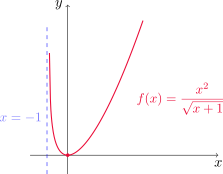
Graficar \(\displaystyle f(x)=xe^x\).
Procedemos como en los ejemplos anteriores.
(A) Dominio La función es el producto de un polinomio por una exponencial, con lo cual \(D_f=\mathbb{R}\).
(B) Intersecciones
- Para encontrar intersecciones con el eje \(x\) escribimos
\[ f(x)=0, \quad \text{ es decir,} \quad x\,e^x=0, \]
y como \(e^x>0\) para todo \(x\), obtenemos que \(x=0\).
- Para calcular la intersección con el eje \(y\) evaluamos
\[ f(0)=0\,e^0=0. \]
Entonces la gráfica interseca al eje \(y\) en \(y=0\).
En conclusión, el única corte con los ejes se da en el origen de coordenadas.
(C) Simetría y periodicidad
Comenzamos calculando \(f(-x)\)
\[ f(-x)=(-x)e^{-x}=-xe^{-x}, \]
que no coincide con \(f(x)\) ni con \(f(-x)\), por lo que la función no es par ni impar. Vemos que \(f\) tampoco resulta periódica.
(D) Asíntotas
La gráfica no presenta asíntotas verticales, ya que se trata de una función continua en todo \(\mathbb{R}\).
Para las asíntotas horizontales, calculamos
\[ \lim_{x\to\infty} f(x)=\lim_{x\to \infty} xe^x=\infty, \]
ya que se trata de un producto donde cada factor se hace arbitrariamente grande. Por otro lado, llamando \(y=-x\)
\[ \lim_{x\to-\infty} f(x)=\lim_{x\to -\infty} xe^x=\lim_{y\to \infty} (-y)e^{-y}=\lim_{y\to \infty} -\frac{y}{e^y}=0, \]
utilizando la regla de L’Hospital. Esto nos dice que \(y=0\) es asíntota horizontal del gráfico de \(f\).
(E) Intervalos de crecimiento y decrecimiento
Calculamos \(f'\) con la regla del producto
\[ f'(x)=e^x+xe^x=e^x(x+1), \]
de donde podemos ver que \(f'(x)=0\) si y sólo si \(x=-1\). Por lo tanto \(f\) tiene un único punto crítico, \(x=-1\). Utilizando la propiedad del signo constante, \(f'\) tendrá signo constante en los intervalos \((-\infty, -1)\) y en \((-1,+\infty)\). En la siguiente tabla determinamos el signo de \(f'\) en cada uno de ellos.
| Intervalo | \(x_0\) | \(f'(x_0)\) | \(f\) |
|---|---|---|---|
| \((-\infty,-1)\) | \(-2\) | \(-\) | decrece |
| \((-1,+\infty)\) | 0 | \(+\) | crece |
Con la prueba creciente/decreciente podemos concluir que \(f\) crece en \((-1,+\infty)\) y que decrece en \((-\infty,-1)\).
(F) Valores extremos locales
En la tabla anterior vemos que \(f'\) cambia de negativa a positiva en \(x=-1\), por lo que \(f\) presenta un mínimo local en este punto (por la prueba de la primera derivada) y su valor es \(f(-1)=-1\,e^{-1}=-1/e\approx -0.37\).
(G) Concavidad y puntos de inflexión
Calculamos la derivada segunda de \(f\), nuevamente con la regla del producto
\[ f''(x)=e^x(x+1)+e^x=e^x(x+2). \]
Así, \(f''(x)=0\) si y sólo si \(x=-2\). Por la propiedad del signo constante, \(f''\) tendrá signo constante en \((-\infty,-2)\) y en \((-2,+\infty)\). En la siguiente tabla calculamos estos signos.
| Intervalo | \(x_0\) | \(f''(x_0)\) | \(f\) |
|---|---|---|---|
| \((-\infty,-2)\) | \(-3\) | \(-\) | cóncava |
| \((-2,+\infty)\) | -1 | \(+\) | convexa |
Entonces \(f\) resulta convexa en \((-2,+\infty)\) y cóncava en \((-\infty,-2)\) como consecuencia de la prueba de la concavidad. El signo de \(f''\) cambia en \(x=-2\), que resulta un punto de continuidad de \(f\), por lo que \(P=(-2,f(-2))=(-2,-2/e^2)\) es el único punto de inflexión de la gráfica.
(H) Trazar la gráfica Con lo calculado anteriormente trazamos la gráfica aproximada de \(f\).
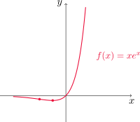
Realizar el gráfico de la función \(\displaystyle f(x)=\frac{\cos x}{2+\operatorname{sen} x}\).
(A) Dominio Observemos que \(-1\leq \operatorname{sen} x\leq 1\), con lo que \(2+\operatorname{sen}x\geq 1\) para todo \(x\), es decir, el denominador nunca se anula. En consecuencia, \(D_f=\mathbb{R}\).
(B) Intersecciones
- Para encontrar intersecciones con el eje \(x\) escribimos
\[ f(x)=0, \quad \text{ es decir,} \quad\frac{\cos x}{2+\operatorname{sen} x}=0, \]
que se cumple cuando \(\cos x=0\), es decir, si \(x=(2n+1)\pi/2\), \(n\in\mathbb{Z}\).
- Para calcular la intersección con el eje \(y\) evaluamos
\[ f(0)=\frac{\cos 0}{2+\operatorname{sen} 0}=\frac{1}{2}. \]
Entonces la gráfica interseca al eje \(y\) en \(y=1/2\).
(C) Simetría y periodicidad
Comenzamos calculando \(f(-x)\)
\[ f(-x)=\frac{\cos(-x)}{2+\operatorname{sen}(-x)}=\frac{\cos x}{2-\operatorname{sen}x}, \]
ya que \(y=\cos x\) es una función par e \(y=\operatorname{sen} x\) es impar. Esta expresión no coincide con \(f(x)\) ni con \(f(-x)\), por lo que la función no es par ni impar.
Para la periodicidad, como las funciones trigonométricas son periódicas, esperamos obtener una función periódica. Para determinar el período, si \(p>0\) está fijo planteamos la condición \(f(x+p)=f(x)\) e intentaremos determinar \(p\).
Esta condición resulta
\[ \frac{\cos(x+p)}{2+\operatorname{sen}(x+p)}=\frac{\cos x}{2+\operatorname{sen} x}. \]
Utilizando las fórmulas para el seno y el coseno de una suma de ángulos
\[ \operatorname{sen}(\alpha+\beta)=\operatorname{sen} \alpha \cos \beta +\cos\alpha \operatorname{sen} \beta \quad \text{ y } \quad \cos(\alpha+\beta)=\cos\alpha\cos\beta-\operatorname{sen} \alpha\operatorname{sen} \beta \]
obtenemos
\[ \frac{\cos x\cos p-\operatorname{sen} x\operatorname{sen} p}{2+\operatorname{sen} x\cos p+\cos x\operatorname{sen} p}=\frac{\cos x}{2+\operatorname{sen} x}. \]
Esta igualdad implica que
\[ (\cos x\cos p-\operatorname{sen} x\operatorname{sen} p)(2+\operatorname{sen} x)=(2+\operatorname{sen} x\cos p+\cos x\operatorname{sen} p)\cos x \]
o de manera equivalente
\[ 2\cos x\cos p+\cos x\operatorname{sen} x\cos p-2\operatorname{sen} x\operatorname{sen} p-\operatorname{sen}^2 x\operatorname{sen} p=2\cos x+\cos x\operatorname{sen} x\cos p+\cos^2x\operatorname{sen} p, \]
que puede ser reducida a
\[ 2\cos x(\cos p-1)=\operatorname{sen} p(1+2\operatorname{sen} x). \tag{5.1}\]
Ahora bien, si \(\operatorname{sen} p\neq 0\), entonces obtenemos
\[ \frac{\cos p-1}{\operatorname{sen} p}=\frac{1+2\operatorname{sen} x}{2\cos x}, \]
pero como esta igualdad debe cumplirse para todo \(x\) tal que \(\cos x\neq 0\), es un absurdo. Entonces debe ser \(\operatorname{sen} p=0\), y sustituyendo esto en (5.1) resulta
\[ 2\cos x(\cos p-1)=0, \]
de donde concluimos que \(\cos p=1\). El valor positivo \(p\) más pequeño que verifica \(\operatorname{sen} p=0\) y \(\cos p=1\) es \(p=2\pi\), con lo cual \(f\) es periódica de período \(2\pi\). Así, basta analizarla ahora en \([0,2\pi]\) y luego extender su gráfico a todo \(\mathbb{R}\) de forma periódica.
(D) Asíntotas
La gráfica no presenta asíntotas verticales, ya que se trata de una función continua en todo \(\mathbb{R}\).
No presenta asíntotas horizontales, ya que se trata de una función periódica de período \(2\pi\).
(E) Intervalos de crecimiento y decrecimiento
Como \(f\) es periódica de período \(2\pi\), Calculamos \(f'\) usando la regla del cociente
\[ f'(x)=\frac{-\operatorname{sen} x(2+\operatorname{sen} x)-\cos x\cos x}{(2+\operatorname{sen} x)^2}=-\frac{1+2\operatorname{sen} x}{(2+\operatorname{sen} x)^2}. \]
Luego \(f'(x)=0\) si y sólo si \(1+2\operatorname{sen} x=0\), o de forma equivalente \(\operatorname{sen} x=-1/2\). Esto significa que los puntos críticos de \(f\) son \(x=7\pi/6\) y \(11\pi/6\). Por la propiedad del signo constante, \(f'\) tendrá signo constante en los intervalos \((0, 7\pi/6)\), \((7\pi/6,11\pi/6)\) y \((11\pi/6,2\pi)\). En la siguiente tabla determinamos el signo de \(f'\) en cada uno de ellos.
| Intervalo | \(x_0\) | \(f'(x_0)\) | \(f\) |
|---|---|---|---|
| \(\displaystyle \left(0, \frac{7\pi}{6}\right)\) | \(\pi\) | \(-\) | decrece |
| \(\displaystyle \left(\frac{7\pi}{6}, \frac{11\pi}{6}\right)\) | \(\displaystyle\frac{3\pi}{2}\) | \(+\) | crece |
| \(\displaystyle \left(\frac{11\pi}{6}, 2\pi\right)\) | \(\displaystyle\frac{23\pi}{12}\) | \(-\) | decrece |
Con la prueba creciente/decreciente podemos concluir que \(f\) crece en \((7\pi/6, 11\pi/6)\) y que decrece en \((0, 7\pi/6)\) y en \((11\pi/6, 2\pi)\).
(F) Valores extremos locales
En la tabla anterior vemos que \(f'\) cambia de negativa a positiva en \(x=7\pi/6\), por lo que \(f\) presenta un mínimo local en este punto (por la prueba de la primera derivada) y su valor es \(f(7\pi/6)=-\sqrt{3}/2\approx -0.577\). También vemos que \(f'\) cambia de positiva a negativa en \(x=11\pi/6\), con lo cual \(f\) presenta un máximo local en este punto de valor \(f(11\pi/6)=\sqrt{3}/2\approx 0.577\).
(G) Concavidad y puntos de inflexión
Calculamos la derivada segunda de \(f\), nuevamente con la regla del cociente
\[ f''(x)=-\frac{2\cos x(2+\operatorname{sen} x)^2-(1+2\operatorname{sen} x)2(2+\operatorname{sen} x)\cos x}{(2+\operatorname{sen} x)^4}=-\frac{2\cos x(1-\operatorname{sen} x)}{(2+\operatorname{sen} x)^3}. \]
Así, \(f''(x)=0\) cuando \(\cos x=0\) o cuando \(\operatorname{sen} x=1\). Los puntos son \(x=\pi/2\) y \(x=3\pi/2\) para que se cumpla la primera, y \(x=\pi/2\) para la segunda. Por la propiedad del signo constante \(f''\) tendrá signo constante en \((0,\pi/2)\), en \((\pi/2,3\pi/2)\) y en \((3\pi/2, 2\pi)\). En la siguiente tabla calculamos estos signos.
| Intervalo | \(x_0\) | \(f'(x_0)\) | \(f\) |
|---|---|---|---|
| \(\displaystyle \left(0, \frac{\pi}{2}\right)\) | \(\displaystyle\frac{\pi}{4}\) | \(-\) | cóncava |
| \(\displaystyle \left(\frac{\pi}{2}, \frac{3\pi}{2}\right)\) | \(\pi\) | \(+\) | convexa |
| \(\displaystyle \left(\frac{3\pi}{2}, 2\pi\right)\) | \(\displaystyle\frac{7\pi}{4}\) | \(-\) | cóncava |
Entonces \(f\) resulta convexa en \((\pi/2,3\pi/2)\) y cóncava en \((0,\pi/2)\) y en \((3\pi/2,2\pi)\) como consecuencia de la prueba de la concavidad. El signo de \(f''\) cambia en \(x=\pi/2\) y en \(x=3\pi/2\), ambos puntos de continuidad de \(f\), por lo que \(P=(\pi/2,f(\pi/2))=(\pi/2,0)\) y \(Q=(3\pi/2, f(3\pi/2))=(3\pi/2,0)\) son los dos puntos de inflexión de la gráfica.
(H) Trazar la gráfica Con lo calculado anteriormente trazamos la gráfica aproximada de \(f\).
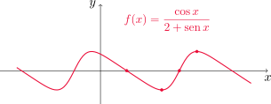
Graficar \(y=\ln(4-x^2)\).
(A) Dominio Debido a que el logaritmo de cero y de números negativos no existe, planteamos que \(4-x^2>0\), lo que nos lleva a \(|x|<2\), o también \(-2<x<2\). En consecuencia, \(D_f=(-2,2)\).
(B) Intersecciones
- Para encontrar intersecciones con el eje \(x\) hacemos
\[ f(x)=0, \quad \text{ es decir,} \quad \ln(4-x^2)=0, \]
que nos conduce a \(x^2=3\) y entonces \(x=\pm \sqrt{3}\).
- Para calcular la intersección con el eje \(y\) evaluamos
\[ f(0)=\ln(4-0^2)=\ln 4\approx 1.386. \]
Entonces la gráfica interseca al eje \(y\) en \(y=\ln 4\).
(C) Simetría y periodicidad
Comenzamos calculando \(f(-x)\)
\[ f(-x)=\ln(4-(-x)^2)=\ln(4-x^2)=f(x), \]
para todo \(x\) en el dominio de \(f\), de donde resulta que \(f\) es par.
En este caso \(f\) no resulta periódica.
(D) Asíntotas
- Dado que \(f\) es continua en su dominio, analizamos los puntos extremos del intervalo.
Observar que tanto cuando \(x\to 2^-\) como cuando \(x\to -2^+\), \(4-x^2\to 0\) con valores positivos. Como \(\lim_{t\to 0^+} ln(t)=-\infty\), concluimos que
\[ \lim_{x\to -2^+} f(x)=-\infty \quad \text{ y también } \quad \lim_{x\to 2^-} f(x)=-\infty. \]
Es decir, \(x=-2\) y \(x=2\) son asíntotas verticales de la gráfica de \(f\).
- La función no presenta asíntotas horizontales, ya que \(f\) sólamente está definida en \((-2,2)\).
(E) Intervalos de crecimiento y decrecimiento
Calculamos \(f'\) utilizando la derivada del logaritmo natural y la regla de la cadena
\[ f'(x)=-\frac{2x}{4-x^2}, \]
de donde podemos ver que \(f'(x)=0\) si y sólo si \(x=0\). Por lo tanto \(f\) tiene un único punto crítico, \(x=0\). Utilizando la propiedad del signo constante, \(f'\) tendrá signo constante en los intervalos \((-2, 0)\) y en \((0,2)\). La siguiente tabla muestra el signo de \(f'\) en cada uno.
| Intervalo | \(x_0\) | \(f'(x_0)\) | \(f\) |
|---|---|---|---|
| \((-2,0)\) | \(-1\) | \(+\) | crece |
| \((0,2)\) | 1 | \(-\) | decrece |
Utilizando la prueba creciente/decreciente concluimos que \(f\) crece en \((-2,0)\) y decrece en \((0,2)\).
(F) Valores extremos locales
En la tabla anterior vemos que \(f'\) cambia de positiva a negativa en \(x=0\), por lo que \(f\) presenta un máximo local en este punto (por la prueba de la primera derivada) y su valor es \(f(0)=\ln 4\).
(G) Concavidad y puntos de inflexión
Calculamos la derivada segunda de \(f\) usando la regla del cociente
\[ f''(x)=-\frac{2(4-x^2)-2x(-2x)}{(4-x^2)^2}=-\frac{2x^2+8}{(4-x^2)^2}. \]
Podemos observar que \(f''(x)<0\) en todo su dominio, es decir, en todo el intervalo \((-2,2)\). Por la prueba de la concavidad \(f\) resulta cóncava en todo su dominio, y en consecuencia no hay puntos de inflexión.
(H) Trazar la gráfica Con todo lo calculado anteriormente trazamos la gráfica aproximada de \(f\).
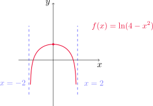
4.7. Problemas de optimización
En esta sección aplicaremos los métodos aprendidos para hallar extremos de una función a problemas concretos. La idea es optimizar cierta cantidad, estableciendo una función que debe maximizarse (como utilidades o ganancias) o minimizarse (como un costo, una distancia o un tiempo de recorrido). Veamos algunos ejemplos.
Un granjero tiene 2400 pies de cerca y desea cercar un campo rectangular que limita con un río recto. No necesita cercar a lo largo del río. ¿Cuáles son las dimensiones del campo que tiene el área más grande?
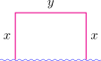
El primer paso es definir adecuadamente la función a optimizar, especificando las unidades de medida y el intervalo al que pertenece la variable independiente. Si llamamos \(x\) e \(y\) a las longitudes medidas en pies de los laterales del campo y del fondo, respectivamente, entonces el área encerrada es \[ A=xy. \]
Sin embargo, sabemos que el perímetro de la región resultante debe sewr de 2400 pies, con lo cual
\[ 2x+y=2400, \quad \text{ o bien} \quad y=2400-2x. \]
Ahora podemos expresar el área como una función de \(x\)
\[ A(x)=x(2400-2x)=2400x-2x^2, \]
donde \(0\leq x\leq 1200\). Esta restricción aparece al imponer las condiciones de que tanto \(x\) como \(A(x)\) sean no negativas.
Como \(A\) es una función continua en el intervalo \([0,1200]\), el teorema de los valores extremos asegura que alcanza tanto un máximo como un mínimo absoluto en el intervalo.
Buscamos entonces los puntos críticos de \(A\). Tenemos que
\[ A'(x)=2400-4x, \]
y \(A'(x)=0\) si y sólo si \(x=600\). Ahora evaluamos \(A\) en este punto, y en los extremos del intervalo
\[ A(600)=2400\cdot 600-2(600)^2=720000 \]
\[ A(0)=2400\cdot 0 - 2\cdot 0^2=0, \quad A(1200)=2400\cdot 1200- 2(1200)^2=0. \]
De esta manera, el máximo valor posible para el área es \(720000\) pies2, y se logra cuando \(x=600\) pies. Luego, \(y=2400-2\cdot 600=1200\) pies. Por lo que el sector que encierra área máxima debe tener \(600\) pies en los laterales y \(1200\) pies en el fondo.
Se va a fabricar una lata para que contenga 1 litro de aceite. Hallar las dimensiones que minimizarán el costo del metal para fabricar la lata.
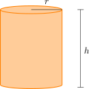
Como queremos minimizar el costo de fabricación, debemos minimizar el área de la superficie de la lata. Si llamamos \(r\) y \(h\) al radio de la base y la altura, respectivamente, medidas en cm, el área de la superficie es
\[ A=A_\ell+A_b=2\pi rh+2\pi r^2. \]
La condición sobre la capacidad de la lata nos da
\[ 1000 =\pi r^2 h, \]
y despejando \(h\) en términos de \(r\)
\[ h=\frac{1000}{\pi r^2}. \]
Usando esta relación en la fórmula para el área resulta
\[ A(r)=2\pi r\frac{1000}{\pi r^2}+2\pi r^2=\frac{2000}{r}+2\pi r^2 \]
con \(r\in(0,+\infty)\).
Buscamos los puntos críticos de \(A\), calculando la derivada.
\[ A'(r)=-\frac{2000}{r^2}+4\pi r \]
con lo cual \(A'(r)=0\) si y sólo si \(r=\sqrt[3]{500/\pi}=r_0\). Para determinar la naturaleza de este punto crítico, podemos emplear la prueba de la segunda derivada.
\[ A''(r)=\frac{4000}{r^3}+4\pi, \]
de donde \(A''(r_0)>0\) y entonces la función \(A\) alcanza un mínimo local en \(r_0\), cuyo valor es
\[ A(r_0)=\frac{2000}{r_0}+2\pi r_0^2=\frac{2000}{\sqrt[3]{500/\pi}}+2\pi (500/\pi)^{2/3}=\frac{3000}{\sqrt[3]{500/\pi}}\, \mathrm{cm}^2 \approx 553.58 \mathrm{cm}^2. \]
Para asegurarnos de que este valor mínimo local es también absoluto, estudiamos los límites de \(A\) cuando \(r\) se aproxima a cero o a infinito
\[ \lim_{r\to 0^+} A(r)=\lim_{r\to 0^+} \frac{2000}{r}+2\pi r^2=\infty \]
y
\[ \lim_{r\to \infty} A(r)=\lim_{r\to \infty} \frac{2000}{r}+2\pi r^2=\infty, \]
con lo cual el mínimo encontrado es absoluto. Las dimensiones de la lata que minimizan el área de la superficien (y, por lo tanto, el costo de fabricación) son
\[ r=r_0=\sqrt[3](500/pi)\approx 5.419 \,\mathrm{cm} \quad \text{ y } \quad h=\frac{1000}{\pi r_0^2}=2r_0=2\sqrt[3](500/pi)\approx 10.838 \,\mathrm{cm}. \]
Podemos utilizar otro método para determinar la naturaleza del punto crítico hallado. Como \(A'\) es continua en \((0,+\infty)\) y se anula en \(r_0\), la propiedad del signo constante establece que tendrá signo constante en \((0,r_0)\) y en \((r_0,+\infty)\). En la siguiente tabla tenemos el signo de \(A'\) en cada uno.
| Intervalo | \(r\) | \(A'(r)\) | \(A\) |
|---|---|---|---|
| \((0,r_0)\) | \(1\) | \(-\) | decrece |
| \((r_0,+\infty)\) | \(6\) | \(+\) | crece |
Por la prueba creciente/decreciente sabemos que \(A\) decrece en \((0,r_0)\) y crece en \((r_0,+\infty)\), por lo que en \(r_0\) alcanza su único mínimo local, que también es absoluto.
Podemos dar una versión de la prueba de la primera derivada para extremos absolutos.
Prueba de la primera derivada para valores extremos absolutos
Supongamos que \(c\) es un punto crítico de una función continua definida sobre un intervalo \(I\).
Si \(f'(x)>0\) para todo \(x<c\) con \(x\in I\) y \(f'(x)<0\) para todo \(x>c\), \(x\in I\) entonces \(f(c)\) es el valor máximo absoluto de \(f\) en \(I\).
Si \(f'(x)<0\) para todo \(x<c\) con \(x\in I\) y \(f'(x)>0\) para \(x>c\), \(x\in I\) entonces \(f(c)\) es el valor mínimo absoluto de \(f\) en \(I\).
Encontrar el punto sobre la parábola \(y^2=2x\) más cercano al punto \((1,4)\).
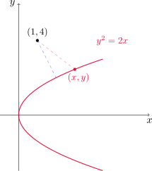
Si \((x,y)\) es cualquier punto sobre la parábola, entonces queremos que la distancia desde \((x,y)\) a \((1,4)\), es decir
\[ d=\sqrt{(x-1)^2+(y-4)^2} \]
sea lo más chica posible. Como \(y^2=2x\) por estar el punto en la parábola, también podemos escribir \(x=y^2/2\). Con esta relación expresamos a la distancia en términos de \(y\)
\[ d(y)=\sqrt{\left(\frac{1}{2}y^2-1\right)^2+(y-4)^2}. \]
Dado que \(d(y)\geq 0\) para todo \(y\), \(d\) es mínima si y sólo si \(d^2\) es mínima. Para evitar trabajar con la raíz cuadrada, consideramos
\[ f(y)=d^2(y)=\left(\frac{1}{2}y^2-1\right)^2+(y-4)^2, \]
para \(y\in \mathbb{R}\). Buscamos los puntos críticos, hallando \(f'\).
\[ f'(y)=2\left(\frac{1}{2}y^2-1\right)y+2(y-4)=y^3-8, \]
con lo que \(f'(y)=0\) si y sólo si \(y=2\). Como \(f\) presenta un único punto crítico en \(\mathbb{R}\), hacemos la tabla
| Intervalo | \(y_0\) | \(f'(y_0)\) | \(f\) |
|---|---|---|---|
| \((-\infty,2)\) | \(0\) | \(-\) | decrece |
| \((2,+\infty)\) | \(3\) | \(+\) | crece |
Utilizando la prueba de la primera derivada para valores extremos absolutos concluimos que \(f\) presenta un mínimo absoluto en \(y=2\), cuyo valor es
\[ f(2)=\left(\frac{1}{2}2^2-1\right)^2+(2-4)^2=5, \]
con lo que la distancia mínima es \(d=\sqrt{5}\) (recordar que minimizamos \(d^2\)). El punto sobre la parábola donde se alcanza esta distancia mínima es \((2^2/2,2)=(2,2)\).
Un hombre está en un punto \(A\) sobre una de las riberas de un río recto que tiene 3 km de ancho y desea llegar hasta el punto \(B\), 8 km corriente abajo en la ribera opuesta, tan rápido como le sea posible. Podría remar en su bote, cruzar directamente el río hasta el punto \(C\) y correr hasta \(B\), o podría remar hasta \(B\) o, en última instancia, remar hasta algún punto \(D\), entre \(C\) y \(B\), y luego correr hasta \(B\). Si puede remar a 6 km/h y correr a 8 km/h, ¿dónde debe desembarcar para llegar a \(B\) tan pronto como sea posible? (Suponer que la rapidez del agua es insignificante comparada con la rapidez a la que rema el hombre.)
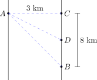
Supongamos que el hombre rema desde \(A\) hasta un punto \(D\) ubicado entre \(C\) y \(B\) (pudiendo, tal vez, coincidir con alguno de éstos). Sea \(x\) la distancia en km desde el punto \(C\) al punto \(D\). Si \(d_1(x)\) es la distancia en km desde \(A\) hasta \(D\), utilizando el teorema de Pitágoras resulta
\[ d_1^2(x)=x^2+3^2, \quad \text{ o bien }\quad d_1(x)=\sqrt{9+x^2}. \]
Entonces el hombre rema \(d_1(x)\) km desde \(A\) hasta \(D\), y luego corre \(d_2(x)=8-x\) kilómetros desde \(D\) hasta \(B\). Podemos calcular el tiempo total dividiendo cada distancia por la velocidad correspondiente. Si llamamos \(T(x)\) tal tiempo en horas, en función de \(x\) obtenemos
\[ T(x)=\frac{d_1(x)}{6}+\frac{d_2(x)}{8}=\frac{\sqrt{9+x^2}}{6}+\frac{8-x}{8}, \]
donde \(x\in [0,8]\).
Para llegar al punto \(B\) lo más rapido posible, es preciso minimizar el tiempo de recorrido.
Como estamos en el caso de una función continua en un intervalo cerrado, buscamos los puntos críticos en \((0,8)\) y comparamos los valores de la función en estos puntos con los valores que toma en los extremos del intervalo.
\[ T'(x)=\frac{1}{6}\frac{1}{2\sqrt{9+x^2}}2x+\frac{1}{8}(-1)=\frac{x}{6\sqrt{9+x^2}}-\frac{1}{8} \]
que se anula cuando \(x=9\sqrt{7}/7\approx 3.4\) km. Dado que
\[ T(9\sqrt{7}/7)=\frac{\sqrt{9+\frac{81\cdot 7}{49}}}{6}+\frac{8-\frac{9\sqrt{7}}{7}}{8}=1+\frac{\sqrt{7}}{8}\approx 1.33 \]
y
\[ T(0)=\frac{\sqrt{9+0^2}}{6}+\frac{8-0}{8}=\frac{1}{2}+1=1.5 \quad \text{ y }\quad T(8)=\frac{\sqrt{9+8^2}}{6}+\frac{8-8}{8}=\frac{\sqrt{73}}{6}\approx 1.42, \]
el mínimo tiempo posible se consigue cuando \(x=9\sqrt{7}/7\) km.
Encontrar el área del rectángulo más grande que puede inscribirse en una semicircunferencia de radio \(r\).
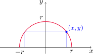
Por simplicidad podemos ubicar la semicircunferencia centrada en el origen, abarcando el primer y el segundo cuadrantes. Sean \(x\) e \(y\) las coordenadas del vértice superior derecho del rectángulo que toca a la circunferencia (es decir, \(x\) e \(y\) son positivos). Entonces el rectángulo tiene altura \(y\) y base de longitud \(2x\). Su área resulta entonces
\[ A=2xy. \]
Como el punto \((x,y)\) también está ubicado sobre la semicircunferencia, se cumple que \(x^2+y^2=r^2\), o también \(y=\sqrt{r^2-x^2}\). Por lo tanto, el área como función de \(x\) resulta ser
\[ A(x)=2x\sqrt{r^2-x^2}, \]
con \(0\leq x\leq r\). Como \(A\) es continua en el intervalo cerrado dado, sabemos que alcanza extremos absolutos. La derivada de \(A\) es
\[ A'(x)=2\sqrt{r^2-x^2}+2x\frac{1}{2\sqrt{r^2-x^2}}(-2x)=\frac{2r^2-4x^2}{\sqrt{r^2-x^2}}. \]
El único punto crítico en el intervalo \((0,r)\) es \(x=r\sqrt{2}/2\). Evaluamos entonces
\[ A(r\sqrt{2}/2)=2\frac{\sqrt{2}}{2}r\sqrt{r^2-\frac{r^2}{2}}=r^2 \]
y también en los extremos del intervalo
\[ A(0)=2\cdot 0\sqrt{r^2-0^2}=0 \quad \text{ y }\quad A(r)=2r\sqrt{r^2-r^2}=0. \]
Con lo cual, el área máxima es \(r^2\) y se alcanza cuando \(x=r\sqrt{2}/2\) e \(y=\sqrt{r^2-\frac{r^2}{2}}=r\sqrt{2}/2\). Es decir, el rectángulo tiene altura igual a la mitad de su base.